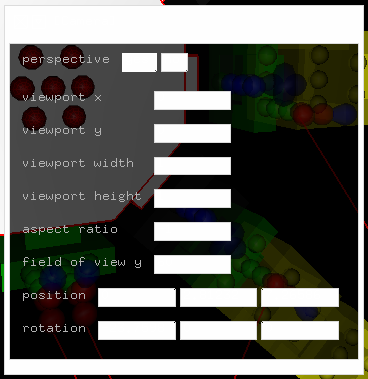

Apple's designers made the concept of transparency quite
fashionable (and they got me as well :-)
If you like the transparency of the modules and windows
in kodisein or not is simply a matter of taste. It doesn't really change
the way you work.
But in one aspect I extended the transparency idea and you
should maybe know it:
When working with kosima you will eventually open some windows.
Especially the inspector will be
used quite often. The problem with windows is, that they float
over your project's modules and partly obscure them. You can't
do much about this, windows are still the most effective way to
edit (alpha-) numerical data.
But I discovered that you still could use the (otherwise wasted) space
between the single UI elements of the window to pick objects that lie
behind the window. This 'pick trough' feature minimizes the need to
shove windows around in order to select an obscured object.
Above you see the inspector for a camera module.
In the image below, the regions where you can't pick through the window
are masked in white (the border of the window is used to drag it around):

Try it. If you work with kosima, you will start to love this feature
after a while, I am sure.
>>> File Browser